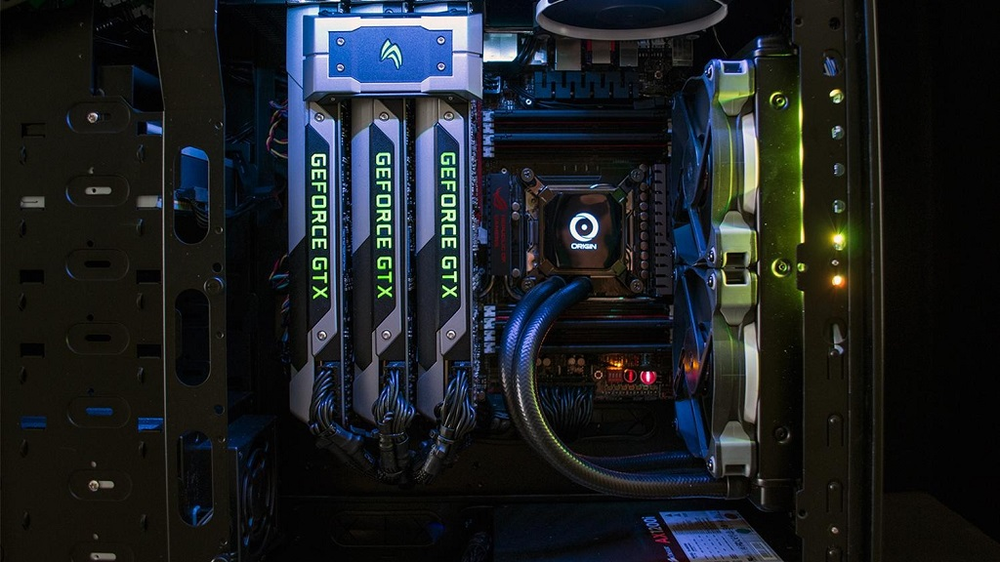

Aprèn a montar el teu PC Tot el que tens que saber, aquí!
PC BUILDING
Vols montar el teu propi PC, però no saps per on començar?

Si tens pensat montar-te un PC i no saps per on començar, estàs en el lloc ideal.En aquesta pàgina a part d'aprendre la funcionalitat i el tipus de components que hi ha en el mercat, t'expliquem per què comprar un PC per peçes és la millor opció que tens.
Veure més
El primer pas per comprar un PC per peces és saber quins components necessita un ordinador i descobrir què fa cadascun d'ells. Depenent de la utilitat que li donis al teu PC, la gamma dels components variarà. Veure més